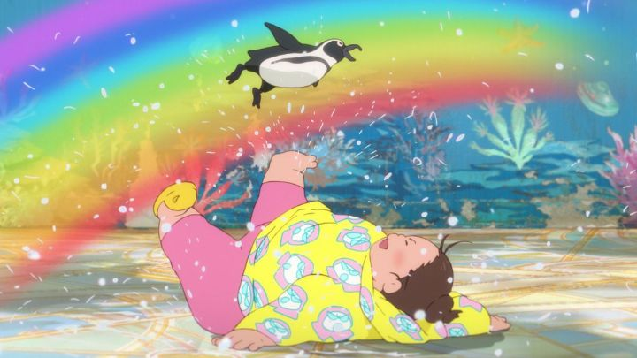

I went into "Fortune Favors Lady Nikuko" blind. All I really knew was that it was made by Studio 4C, an anime studio that has consistently impressed me, with a very limited output (at most, a movie every few years). I also knew this 2021 movie was their next 2D project after 2019's "Children of the Sea," both comparable for their seaside setting. And from the posters, I knew the lead characters were Nikuko, a fat, and presumably lucky, carefree woman, and a young, sickly-looking girl that lived with her on a boat. That premise, limited as it was, was the only thing that gave me pause: I wasn't sure that I'd enjoy the movie at all, but gave the benefit of the doubt because of the studio in charge. And "Fortune Favors" makes a difficult first impression. Through the narration of Kikuko, the daughter, we learn who Nikuko is. Her name translates in Kanji as "meat-lady," inspiring a metaphor for her fat image. She's described as a woman of good humor, enjoying puns and wordplay involving numbers and words as written in Japanese. The jokes are clever and quick, but difficult to translate for international audiences. Other anime with the same type of jokes have managed to translate these successfully with some care, but the subtitles in "Nikuko" don't really bother, just giving the literal translation. And not enough care was given to bother making a dub. Right away, a lot of the movie's humor is lost to anyone not familar with Japanese written or spoken.In this introduction, Nikuko is indeed carefree and easily tricked, falling in love with a number of men, each taking advantage of her good nature and money. They desert her, she exhausts herself to pay off debts, and she moves to another town to start over, only for the same thing to happen again. This introduction is told with great pride and admiration of Nikuko's strength, but also with some frustration: Kikuko was dragged along as a child from town to town due to her mother's mistakes. This sets up their dynamic in the present day where the story begins, in a small sea-side town, where the two live cheaply on a docked boat. Nikuko works nights at a nearby grill run by a kind old man, and Kikuko attends school. She is now roughly 12 years old, a slender pale girl, with short hair and decent althetic abilities to be something of a tomboy. They both live a quaint and pleasant life. The movie is a slice-of-life, taking place over roughly a year, depicting their days, while Kikuko ponders what mistakes brought Nikuko to this low state of life and where they might go in the future.That last paragraph has some conflicting tones there. Yes, some difficult events have brought the two girls to this near-poverty state in a tiny town. But this tiny town is a fullfilling life, with lovely friends and neighbors and classmates, beautiful scenary along the water, and delicious food (rendered in mouth-watering detail through animation). And while Nikuko is a bit of a clumsy and forgetful mother, she still means well, and both she and Kikuko clearly love each other very much. Kikuko's state of mind is really just like any other pre-teen child, seeing the glass as half empty and wondering if the grass is greener elsewhere, while smiling on the outside. It's fully justafiable, for how often they've had to move in their earlier years, and it brings her new fears that they might have to move yet again one day, away from this town they've grown accustomed to. Kikuko's mindset is earnest and relatable. There isn't really a story or adventure in "Fortune Favors." It's a pure slice-of-life, coming-of-age movie. I hate those. They tend to be depressing and predictable. But the movie surprised me. Yes, there are some difficult moments of bullying among classmates and complicated thoughts about boys, but it's all told without the usual mean-spirited perspective. That is, it's told from Kikuko's perspective, and she's generally a kind person, despite any flaws. All the characters are generally kind. And the movie's quirky sense of humor keeps things from ever feeling too sad. That comedy is centered around Nikuko, whose large body and personality to match make everyone laugh. She's clumsy and forgetful and loud, making a fool of herself, often to the embarassment of her daughter. Her weight is the subject of a lot of jokes (multiple times, there are visual references to her being like Studio Ghibli's Totoro, and one side character even resembles a caricature of Hayao Miyazaki), but even then, it never feels mean-spirited in the slightest, because she makes everyone smile, and everyone seems to love every pound of her. In one brief line, she makes clear that she knows the comments people say about her, and she takes them in stride as a compliment. Kikuko herself doesn't seem to mind the embarrassment that much either, loving her more than anyone (and one reveal late in the movie is how much of the film's strange humor comes from Kikuko herself, and her own eccentricies). Near the end, the story takes a strange twist towards more adult content, before a big reveal that feels genuine and heartfelt. In it's way it says, despite everything, Nikuko is a good mother, and Kikuko is a good daughter, and they're there for each other. And I was dumbfounded. This movie, lacking in the usual ambition Studio 4C is known for, dense with quick jokes and puns that non-Japanese audiences would completely miss, in a genre I normally feel tired of, had won me over. Sure, I wouldn't put it high on a list of Studio 4C's other movies, but my heart kind of wants to.The visuals are a mismash of things recognizable from what Studio 4C has done before. Close-up shots are details and similar to the uncanny "Children of the Sea," while more abstract and absurdist scenes look closer to "Mind Game." The design and animation isn't ellaborate, but it gets the details right where it matters. As I mentioned, there's no English dub for this (and with all the puns, I don't know that there ever could be), but the cast is good, especially for the two leads. "Fortune Favors Lady Nikuko" stumbles a little, but picks itself up again to be a surprisingly heart-warming family film. Books aren't to be jduged by the cover, and this was a pleasant surprise underneath.
- "Ani" More reviews can be found at : https://2danicritic.github.io/ Previous review: review_Flip_Flappers Next review: review_Fragtime